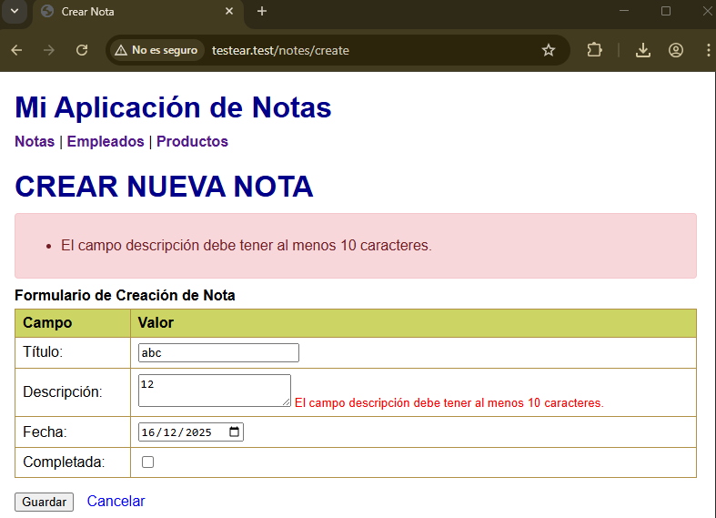

9.2. Sistema de validación¶
9.2. Sistema de validación¶
En el apartado 1 viste cómo proteger formularios con CSRF y buenas prácticas de seguridad. Ahora es momento de profundizar en el corazón de la seguridad de formularios: el sistema de validación de Laravel.
1. Fundamentos de la validación¶
1.1. Qué es la validación?¶
La validación es el proceso de verificar que los datos cumplan con las reglas definidas antes de ser procesados. Es una capa de seguridad esencial que previene errores, mantiene la integridad de los datos y mejora la experiencia del usuario.
Importante
Siempre debemos validar los datos antes de almacenarlos y antes de actualizarlos. Nunca debemos asumir que lo que llega del formulario es seguro o correcto.
1.2. Tipos de validación¶
| Tipo | Descripción | Ejemplo |
|---|---|---|
| Frontend | Validación en el navegador | JavaScript, HTML5 |
| Backend | Validación en el servidor | Laravel Validation |
| Base de Datos | Validación a nivel de BD | Constraints, Triggers |
Por qué 3 capas?
- Frontend: Mejora experiencia del usuario (feedback inmediato).
- Backend: Seguridad real (nunca confiar en el cliente).
- Base de datos: Última defensa (por si algo falla en Backend).
La validación backend es obligatoria
NUNCA te fíes solo de la validación frontend. Un atacante puede:
- Desactivar JavaScript en su navegador.
- Modificar el HTML con las herramientas del navegador.
- Enviar peticiones HTTP directamente sin usar tu formulario.
La validación de Laravel (backend) es tu verdadera seguridad.
2. Sistema de validación de Laravel¶
Laravel proporciona un sistema de validación potente y expresivo que permite definir reglas de manera clara y concisa. Veamos desde la validación más básica hasta casos avanzados.
2.1. Validación básica¶
La forma más simple de validar datos en Laravel es usando el método validate() directamente en el request dentro del controlador.
Puedes combinar múltiples reglas de validación en un solo campo usando el separador | (pipe) o mediante un array.
Ejemplo 1
<?php
// Validación básica en el controlador
public function store(Request $request)
{
$validated = $request->validate([
'name' => 'required|string|max:255',
'email' => 'required|email|unique:users',
'password' => 'required|min:8|confirmed',
]);
// Los datos validados están disponibles en $validated
User::create($validated);
}
Ejemplo 2
<?php
$request->validate([
'name' => 'required|string|max:255|min:3',
'email' => 'required|email|unique:users,email',
'password' => 'required|string|min:8|confirmed',
'age' => 'required|integer|min:18|max:120',
'website' => 'nullable|url',
'phone' => 'nullable|regex:/^[0-9]{9}$/',
]);
Ejemplo 3
En los fichero create.blade.php y edit.blade.php:
<input type="checkbox" name="done" value="1">
Este método permite validar directamente dentro del método del controlador:
public function store(Request $request) {
$validated = $request->validate([
'title' => 'required|string|max:255',
'description' => 'required|string|min:10',
'date_at' => 'required|date',
'done' => 'nullable|boolean'
]);
Note::create($validated);
return redirect()->route('notes.index')->with('success', 'Nota creada correctamente.');
}
Cuando la validación falla, Laravel redirige automáticamente al formulario anterior. Una buena técnica es utilizar el método old() para recuperar el valor anterior del campos de manera que el usuario no tenga que volver a escribirlo.
Recuperar de los datos en el anterior formulario
<input name="title" value="{{ old('title') }}">
Según tipos de campos de formulario
Haremos esto en todos los campos. Cuidado con los textarea que no tienen value y con los checkbox.
Por ejemlo, para el checkbox:
<input type="checkbox" name="done" value="1" {{ old('done') ? 'checked' : '' }}>
1.
2.2. Reglas de validación comunes¶
Laravel incluye docenas de reglas de validación predefinidas para los casos más comunes. Aquí están las más utilizadas:
| Regla | Descripción |
|---|---|
| Presencia | |
required |
El campo es obligatorio |
nullable |
El campo puede estar vacío |
sometimes |
Solo si existe |
| Tipo de dato | |
string |
Debe ser una cadena de texto |
integer |
Debe ser un entero |
numeric |
Debe ser un decimal o entero |
boolean |
true/false, 0/1, "yes"/"no" |
date |
Debe ser una fecha válida |
array |
Array |
| Longitud / tamaño | |
min:n |
Longitud mínima de caracteres |
max:n |
Longitud máxima de caracteres |
size:n |
Tamaño exacto |
| Valores permitidos | |
in:a,b,c |
Lista |
not_in |
Exclusión |
| Formato | |
email |
Email válido |
url |
URL |
regex |
Expresión regular |
| Base de datos | |
unique:notes,title |
Único |
exists:users,id |
Existe |
| Archivos | |
file |
Archivo |
image |
Imagen |
mimes:jpg,png |
Extensión |
max:2048 |
Tamaño (KB) |
3. Validación avanzada¶
Las aplicaciones reales a menudo requieren validación de estructuras complejas: arrays de datos, campos condicionales y archivos con requisitos específicos.
3.1. Validación de arrays¶
Cuando tu formulario envía múltiples elementos (como una lista de productos o etiquetas) Laravel puede validar cada elemento del array individualmente usando la notación con asterisco *.
<?php
// Validación de arrays
$request->validate([
'tags' => 'array',
'tags.*' => 'exists:tags,id',
'products' => 'array|min:1',
'products.*.name' => 'required|string',
'products.*.price' => 'required|numeric|min:0',
]);
'tags' => 'array'Indica que el campo tags debe ser un array.'tags.*' => 'exists:tags,id'El asterisco (*) significa "cada elemento del array". Esta regla valida que cada elemento dentro del array tags exista en la columna id de la tabla tags en la base de datos.'products' => 'array|min:1'El campo products también debe ser un array, y además debe contener al menos 1 elemento (min:1).'products.*.name' => 'required|string'Valida que cada producto dentro del array tenga un campo name obligatorio y de tipo texto (string).'products.*.price' => 'required|numeric|min:0'Valida que cada producto tenga un campo price: obligatorio (required),numérico (numeric), y con un mínimo valor 0 (no negativo).
3.2. Validación condicional¶
A veces necesitas validar un campo solo si se cumple cierta condición. Por ejemplo, solicitar el nombre de empresa solo si el tipo de usuario es "empresa".
<?php
// Validación condicional
$request->validate([
'type' => 'required|in:individual,company',
'company_name' => 'required_if:type,company|string|max:255',
'tax_id' => 'required_if:type,company|string|max:20',
]);
'type' => 'required|in:individual,company'El campo type es obligatorio(required). Su valor solo puede ser "individual" o "company" (in:individual,company).'company_name' => 'required_if:type,company|string|max:255'El campo company_name solo es obligatorio si el campo type tiene el valor "company".'tax_id' => 'required_if:type,company|string|max:20'También es obligatorio solo si type = company.Debe ser una cadena de texto con un máximo de 20 caracteres (por ejemplo, un NIF o CIF).
3.3. Validación de archivos¶
La validación de archivos es crítica para la seguridad. Laravel proporciona reglas específicas para verificar el tipo, tamaño y dimensiones de archivos subidos.
<?php
// Validación de archivos
$request->validate([
'image' => 'required|image|mimes:jpeg,png,jpg|max:2048',
'document' => 'nullable|file|mimes:pdf,doc,docx|max:10240',
'avatar' => 'nullable|image|dimensions:min_width=100,min_height=100',
]);
4. Reglas personalizadas¶
Laravel proporciona decenas de reglas de validación predefinidas, pero a veces necesitas crear reglas específicas para tu aplicación.
4.1. Crear reglas personalizadas¶
Cuando las reglas predefinidas de Laravel no cubren tus necesidades específicas, puedes crear tus propias reglas de validación personalizadas. Esto es útil para validaciones complejas de negocio que requieren lógica específica de tu aplicación.
<?php
// Crear regla personalizada
php artisan make:rule StrongPassword
<?php
namespace App\Rules;
use Illuminate\Contracts\Validation\Rule;
class StrongPassword implements Rule
{
public function passes($attribute, $value)
{
return preg_match('/^(?=.*[a-z])(?=.*[A-Z])(?=.*\d)(?=.*[@$!%*?&])[A-Za-z\d@$!%*?&]{8,}$/', $value);
}
public function message()
{
return 'La contraseña debe contener al menos 8 caracteres, una mayúscula, una minúscula, un número y un carácter especial.';
}
}
4.2. Usar reglas personalizadas¶
Una vez creada la regla personalizada, puedes usarla como cualquier otra regla de validación de Laravel.
<?php
use App\Rules\StrongPassword;
$request->validate([
'password' => ['required', new StrongPassword],
]);
4.3. Reglas con parámetros¶
Las reglas personalizadas pueden aceptar parámetros en su constructor, permitiendo crear validaciones más flexibles y reutilizables.
<?php
namespace App\Rules;
use Illuminate\Contracts\Validation\Rule;
class NotBlacklisted implements Rule
{
protected $blacklist;
public function __construct($blacklist = [])
{
$this->blacklist = $blacklist;
}
public function passes($attribute, $value)
{
return !in_array(strtolower($value), $this->blacklist);
}
public function message()
{
return 'El valor no está permitido.';
}
}
4.4. Crear una clase FormRequest personalizada¶
Comando
php artisan make:request NoteRequest
Esto creará una clase en app/Http/Requests/NoteRequest.php.
Método authorize()
Este método define si el usuario tiene permiso para hacer esta petición. Para este curso lo dejaremos en true:
Importante
Si este método devuelve false, la validación no se ejecutará y se lanzará un error 403 (Forbidden).
Autorizar la petición
public function authorize() {
return true;
}
Método rules()
Ahora vamos a definir unas reglas de validación de ejemplo para notas:
Ejemplo de reglas
public function rules() {
return [
'title' => 'required|string|max:255',
'description' => 'required|string|min:10',
'date_at' => 'required|date',
'done' => 'nullable|boolean'
];
}
Uso en el controlador:
En el controlador, en lugar de usar Request $request, usaremos NoteRequest $request. Laravel se encargará de validar automáticamente los datos antes de ejecutar el método.
Almacenar una nota
//...
use App\Http\Requests\NoteRequest;
//...
public function store(NoteRequest $request) {
$data = $request->all();
$data['done'] = $request->has('done') ? 1 : 0; // Convertir checkbox a booleano
Note::create($data);
return redirect()->route('notes.index');
}
Antes de modificar el update() recordar que en la vista de edición el checkbox se envía como done=on o no se envía nada. Hacemos en esta vista lo mismo que en la de creación:
<input type="checkbox" name="done" value="1" {{ ($note->done) ? 'checked' : '' }}>
Hacemos lo mismo para el método update():
Actualizar una nota
public function update(NoteRequest $request, Note $note) {
$note->update($request->all());
return redirect()->route('notes.index');
}
5. Manejo de errores¶
Cuando la validación falla, Laravel redirige automáticamente al usuario de vuelta al formulario con los errores. Es crucial mostrar estos errores de forma clara para que el usuario sepa qué corregir.
5.1. Mostrar errores en Blade¶
<!-- Mostrar errores específicos -->
<div>
<label for="name">Nombre</label>
<input type="text" id="name" name="name"
class="@error('name') border-red-500 @enderror"
value="{{ old('name') }}">
@error('name')
<p class="text-red-600 text-sm mt-1">{{ $message }}</p>
@enderror
</div>
<!-- Mostrar todos los errores -->
@if($errors->any())
<div class="alert alert-danger">
<ul>
@foreach($errors->all() as $item)
<li>{{ $item }}</li>
@endforeach
</ul>
</div>
@endif
5.2. Mostrar todos los errores juntos¶
Para mostrar todos los errores en la parte superior del formulario:
@if ($errors->any())
<div class="alert alert-danger">
<ul>
@foreach ($errors->all() as $item)
<li>{{ $item }}</li>
@endforeach
</ul>
</div>
@endif
5.3. Mensajes personalizados¶
Los mensajes de error predeterminados de Laravel están en inglés. Puedes personalizarlos para que sean más específicos y acordes a tu aplicación.
<?php
// Mensajes personalizados
$request->validate([
'email' => 'required|email',
'password' => 'required|min:8',
], [
'email.required' => 'El campo email es obligatorio.',
'email.email' => 'El email debe tener un formato válido.',
'password.required' => 'La contraseña es obligatoria.',
'password.min' => 'La contraseña debe tener al menos 8 caracteres.',
]);
5.4. Atributos personalizados¶
En lugar de personalizar cada mensaje, puedes cambiar cómo Laravel nombra los campos en los mensajes de error.
<?php
// Atributos personalizados
$request->validate([
'first_name' => 'required|string',
'last_name' => 'required|string',
], [], [
'first_name' => 'nombre',
'last_name' => 'apellido',
]);
5.5. Resaltar campos con error (CSS)¶
También puedes añadir una clase CSS al campo si tiene error, para destacarlo visualmente según diseño de la aplicación:
Resaltar campos con CSS
<input name="title" class="@error('title') is-invalid @enderror">
Y luego en CSS puedes estilizar la clase .is-invalid.
5.6. Modificar la vista de creación y vista de edición¶
Vista de creación create.blade.php
@extends('layouts.app')
@section('title', 'Crear nueva Nota')
@section('content')
<h2>Editar Nota</h2>
<form action="{{ route('notes.store') }}" method="POST">
@csrf
<label>Título:</label>
<input type="text" name="title" value="{{ old('title') }}" required>
@error('title')
<small style="color:red">{{ $message }}</small>
@enderror
<label>Descripción:</label>
<textarea name="description" required>{{ old('description') }}</textarea>
@error('description')
<small style="color:red">{{ $message }}</small>
@enderror
<label>Fecha:</label>
<input type="date" name="date_at" value="{{ old('date_at') }}" required>
@error('date_at')
<small style="color:red">{{ $message }}</small>
@enderror
<label>Completada:</label>
<input type="checkbox" name="done" {{ old('done') ? 'checked' : '' }}>
@error('done')
<small style="color:red">{{ $message }}</small>
@enderror
<button type="submit">Guardar</button>
<a href="{{ route('notes.index') }}">Cancelar</a>
</form>
@endsection
Vista de edición edit.blade.php
@extends('layouts.app')
@section('title', 'Editar Nota')
@section('content')
<h2>Editar Nota</h2>
<form action="{{ route('notes.update', $note->id) }}" method="POST">
@csrf
@method('PUT')
<label>Título:</label>
<input type="text" name="title" value="{{ $note->title }}" required>
@error('title')
<small style="color:red">{{ $message }}</small>
@enderror
<label>Descripción:</label>
<textarea name="description" required>{{ $note->description }}</textarea>
@error('description')
<small style="color:red">{{ $message }}</small>
@enderror
<label>Fecha:</label>
<input type="date" name="date_at" value="{{ $note->date_at }}" required>
@error('date_at')
<small style="color:red">{{ $message }}</small>
@enderror
<label>Completada:</label>
<input type="checkbox" name="done" {{ $note->done ? 'checked' : '' }}>
@error('done')
<small style="color:red">{{ $message }}</small>
@enderror
<button type="submit">Actualizar</button>
<a href="{{ route('notes.index') }}">Cancelar</a>
</form>
@endsection
Algunos métodos interesantes de laravel que no hemos utilizado pero que se usan a menudo son:
| Clase | Método | Descripción |
|---|---|---|
Illuminate\Support\Facades\Validator |
make() |
Crear un validador |
Illuminate\Support\Facades\Validator |
fails() |
Verificar si la validación falló |
Illuminate\Support\Facades\Validator |
errors() |
Obtener los errores de validación |
Illuminate\Support\Facades\Validator |
validate() |
Validar y redirigir automáticamente |
Illuminate\Support\Facades\Request |
old() |
Obtener el valor anterior de un campo |
Illuminate\Support\Facades\Request |
flash() |
Guardar datos en la sesión para la siguiente petición |
PRACTICA 3
Ahora vamos a probar a crear una nota con una descripción inferir a los 10 caracteres y veremos el mensaje de error.

descripciónAhora podéis comprobar que:
- En la edición las validaciones y mensajes de éxito funcionan igual.
- El campo ´done´ funciona correctamente tanto en creación como en edición.
campo done
Si has seguido al pie de la letra las instrucciones, el campo done no va a funcionar. Al añadir la clase NoteRequest pedimos que el campo sea boolean pero a este punto está llegando un on cuando el checkbox está marcado, o nada cuando no lo está; y por tanto no llegaremos nunca a que se ejecute el método store() o update(), que es donde estábamos manejando el valor del checkbox.
Solución
Necesitamos que cuando se valida el campo done, si está marcado, llegue como true y, si no está marcado, como false; ya que en la validación hemos especificado que debe ser un booleano. Para ello vamos a usar el método prepareForValidation() que nos permite modificar los datos antes de que se apliquen las reglas de validación.
Este método prepareForValidation es muy útil para modificar cualquier dato antes de que se aplique la validación. Por ejemplo, podríamos usarlo para formatear fechas, convertir cadenas a mayúsculas/minúsculas. No siempre la información que llega del formulario está en el formato que necesitamos para validar o almacenar. Y que no esté en el formato no significa que no sea válido. Pero la validación de laravel es estricta y debemos asegurarnos que los datos cumplen las reglas que hemos definido.
Modificar datos antes de validar
Añadimos este método en la clase NoteRequest.
protected function prepareForValidation() {
$this->merge([
'done' => $this->done ? true : false,
]);
}
De esta manera nos aseguramos que el campo done siempre llega como 1 o 0, y por tanto la validación funciona correctamente. Con esto ahora el campo done funciona correctamente.
5.7. Traducir los mensajes de error¶
Laravel trae sus mensajes de error por defecto en inglés.
1) Activa el idioma por defecto en config/app.php:
'locale' => 'es',
2) Archivo por defecto: resources/lang/en/validation.php (las últimas versiones no llevan este archivo).
3) Puedes crear una versión en español copiando el contenido en: resources/lang/es/validation.php
<?php
return [
'required' => 'El campo :attribute es obligatorio.',
'string' => 'El campo :attribute debe ser una cadena de texto.',
'date' => 'El campo :attribute no es una fecha válida.',
'boolean' => 'El campo :attribute debe ser verdadero o falso.',
'numeric' => 'El campo :attribute debe ser numérico',
'max' => [
'numeric' => 'El campo :attribute debe como máximo :max.',
'string' => 'El campo :attribute no puede tener más de :max caracteres.',
],
'min' => [
'string' => 'El campo :attribute debe tener al menos :min caracteres.',
'numeric' => 'El campo :attribute debe como valor mínimo :min.',
],
'attributes' => [
'title' => 'título',
'description' => 'descripción',
'date_at' => 'fecha',
'done' => 'realizada',
'name' => 'nombre',
'price' => 'precio'
],
];
6. Validación en formularios¶
La validación se puede aplicar tanto en el frontend (navegador) como en el backend (Laravel). Ambas son complementarias y necesarias.
6.1. Validación frontend con HTML5¶
HTML5 proporciona validación básica en el navegador antes de enviar el formulario, mejorando la experiencia del usuario con feedback inmediato.
<!-- Validación HTML5 -->
<form>
<input type="text" name="name" required minlength="3" maxlength="255">
<input type="email" name="email" required>
<input type="password" name="password" required minlength="8">
<input type="number" name="age" min="18" max="120">
<input type="url" name="website">
<input type="tel" name="phone" pattern="[0-9]{9}">
</form>
6.2. Validación con JavaScript¶
Para validaciones más complejas o personalizadas en el frontend, puedes usar JavaScript puro. Esto te permite crear reglas específicas y proporcionar feedback inmediato mientras el usuario rellena el formulario.
// Validación con JavaScript
function validateForm() {
const name = document.getElementById('name').value;
const email = document.getElementById('email').value;
const password = document.getElementById('password').value;
if (name.length < 3) {
showError('name', 'El nombre debe tener al menos 3 caracteres');
return false;
}
if (!isValidEmail(email)) {
showError('email', 'El email no es válido');
return false;
}
if (password.length < 8) {
showError('password', 'La contraseña debe tener al menos 8 caracteres');
return false;
}
return true;
}
function isValidEmail(email) {
const emailRegex = /^[^\s@]+@[^\s@]+\.[^\s@]+$/;
return emailRegex.test(email);
}
6.3. Validación en tiempo real¶
La validación en tiempo real proporciona feedback instantáneo mientras el usuario interactúa con el formulario. Se activa al salir de un campo (evento blur) o mientras escribe (evento input), mejorando significativamente la experiencia del usuario.
// Validación en tiempo real
document.getElementById('email').addEventListener('blur', function() {
const email = this.value;
if (email && !isValidEmail(email)) {
showError('email', 'El email no es válido');
} else {
clearError('email');
}
});
7. Validación de relaciones¶
Cuando trabajas con bases de datos relacionales, es crucial validar que las referencias entre tablas sean válidas antes de crear o actualizar registros.
7.1. Validación de claves foráneas¶
La regla exists verifica que un valor exista en una tabla específica antes de permitir su uso como clave foránea. Esto previene errores de integridad referencial.
<?php
// Validar que la categoría existe
$request->validate([
'category_id' => 'required|exists:categories,id',
'tags' => 'array',
'tags.*' => 'exists:tags,id',
]);
7.2. Validación de relaciones Muchos a Muchos¶
En relaciones muchos a muchos (como productos y etiquetas), necesitas validar arrays de IDs para asegurar que todos los elementos relacionados existan en sus respectivas tablas.
<?php
// Validar etiquetas de producto
$request->validate([
'product_id' => 'required|exists:products,id',
'tags' => 'array|min:1',
'tags.*' => 'exists:tags,id',
]);
7.3. Validación de unicidad con condiciones¶
Al editar registros, necesitas validar unicidad pero excluyendo el registro actual. Laravel permite añadir excepciones y condiciones adicionales a la regla unique.
<?php
// Validar unicidad con condiciones
$request->validate([
'email' => 'required|email|unique:users,email,' . $user->id,
'slug' => 'required|unique:products,slug,' . $product->id . ',id,category_id,' . $request->category_id,
]);
8. Validación de formularios complejos¶
Los formularios del mundo real a menudo combinan múltiples tipos de datos: información básica, relaciones, archivos e inventario. Aquí verás ejemplos completos de validación para estos casos.
8.1. Formulario de producto con inventario¶
Un formulario completo de producto incluye datos básicos, relaciones con categorías y etiquetas, control de inventario y archivos. Todas estas validaciones deben trabajar en conjunto.
<?php
// Validación completa de producto
$request->validate([
// Datos del producto
'name' => 'required|string|max:255',
'description' => 'required|string|max:1000',
'price' => 'required|numeric|min:0|max:999999.99',
'category_id' => 'required|exists:categories,id',
// Etiquetas
'tags' => 'array',
'tags.*' => 'exists:tags,id',
// Inventario
'quantity' => 'required|integer|min:0',
'location' => 'required|string|max:255',
'reorder_level' => 'required|integer|min:0',
// Archivo
'image' => 'nullable|image|mimes:jpeg,png,jpg|max:2048',
]);
8.2. Validación de formularios anidados¶
Los formularios pueden enviar datos en estructuras anidadas (arrays dentro de arrays). Laravel permite validar cada nivel de anidación usando la notación de punto.
<?php
// Validación de formularios anidados
$request->validate([
'user' => 'required|array',
'user.name' => 'required|string|max:255',
'user.email' => 'required|email|unique:users,email',
'user.profile' => 'required|array',
'user.profile.bio' => 'nullable|string|max:500',
'user.profile.avatar' => 'nullable|image|max:1024',
]);
9. Mejores prácticas¶
Para mantener tu código limpio, mantenible y escalable, es importante seguir las mejores prácticas de validación que Laravel propone.
9.1. Validación en el controlador¶
La forma más directa de validar es hacerlo en el método del controlador. Es apropiada para validaciones simples que no se reutilizan en múltiples lugares.
<?php
// Validación en el controlador
public function store(Request $request)
{
$validated = $request->validate([
'name' => 'required|string|max:255',
'email' => 'required|email|unique:users',
]);
// Usar solo datos validados
$user = User::create($validated);
return redirect()->route('users.show', $user)
->with('success', 'Usuario creado exitosamente');
}
9.2. Validación en Form Requests¶
Form Requests: Organizando la Validación Compleja
Cuando un formulario tiene muchas reglas de validación, es mejor práctica crear una clase Form Request dedicada en lugar de tener todo en el controlador.
Ventajas:
✅ Código limpio: El controlador se mantiene simple.
✅ Reutilizable: Puedes usar la misma validación en múltiples métodos.
✅ Autorización integrada: Puedes verificar permisos en el mismo lugar.
✅ Mensajes centralizados: Todos los mensajes de error en un solo archivo.
✅ Testing más fácil: Puedes testear la validación de forma aislada.
// Crear Form Request
php artisan make:request StoreProductRequest
<?php
namespace App\Http\Requests;
use Illuminate\Foundation\Http\FormRequest;
class StoreProductRequest extends FormRequest
{
public function authorize()
{
return true;
}
public function rules()
{
return [
'name' => 'required|string|max:255',
'description' => 'required|string|max:1000',
'price' => 'required|numeric|min:0',
'category_id' => 'required|exists:categories,id',
];
}
public function messages()
{
return [
'name.required' => 'El nombre del producto es obligatorio.',
'price.min' => 'El precio debe ser mayor a 0.',
];
}
}
9.3. Usar Form Requests en controladores¶
<?php
// Usar Form Request en el controlador
public function store(StoreProductRequest $request)
{
$validated = $request->validated();
$product = Product::create($validated);
return redirect()->route('products.show', $product);
}